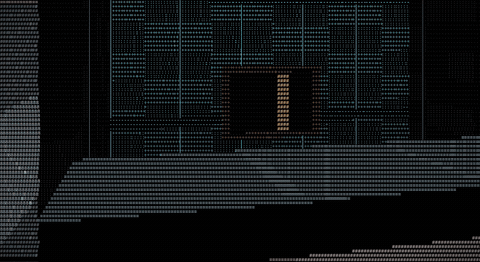
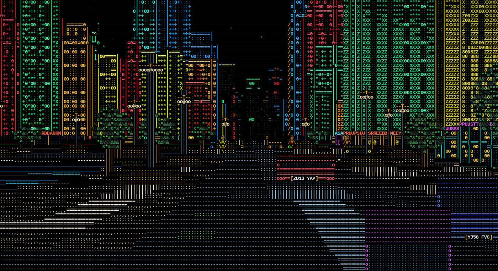
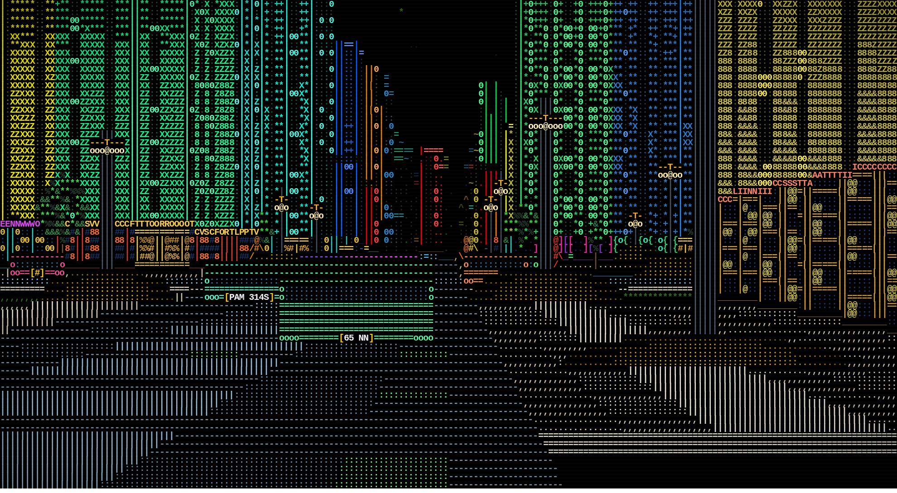
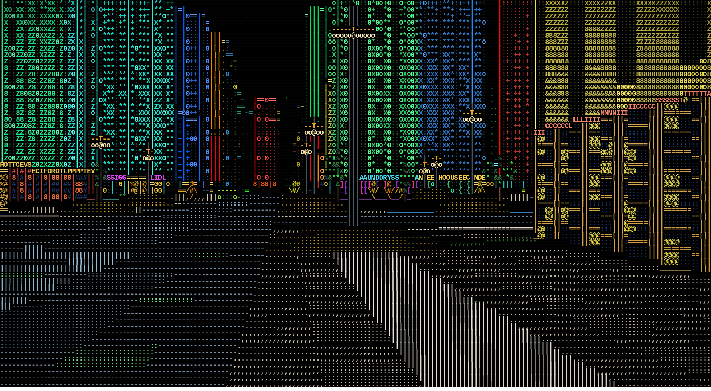

Project · World engine
AsciiWorldEngine
A walkable ASCII city, in a terminal. There is no engine underneath it: the world, the camera, the projection, the raycaster and every glyph and colour on screen are written from scratch in Rust and painted straight into the terminal — no grid held in memory, so the city is unbounded and walking further costs nothing. Public on GitHub.
libc, for the terminal onlyA 1,710 fps ceiling at that frame cost, at 10,800 cells with 223 kept a frame by the occlusion cull. Indoors is cheaper still, 0.544 ms; riding a lift is the most expensive room in the building, at 0.611 ms.

gif export, palette generated
from this footage rather than a fixed web palette.
What it does
Everything here is built and shipping.
The world
Nothing in memory, everything unbounded
- Every cell is a pure function of its coordinate — height, hue, architecture, which building it belongs to — so there is no grid to hold and no edge to reach
- Six building silhouettes (flat, stepped, tapered, crowned, spired, masted), and a seventh that means something: that tower has a lift in it
- A building's name reads on its own facade, so the city is navigable rather than
anonymous, and
Npoints at the nearest lift - Traffic, pedestrians, lampposts, street trees and a star field, all drawn as billboards through the same per-column buffer the walls use
- Weather: clear, rain or downpour, drawn through the same buffer everything else is, leaning with your own velocity
The insides
A door on every building that faces a street
- Walk through a doorway and you are in a real room — ten families, from lobby and market to archive and bar, each with its own furniture and layout off the building's own seed
- The street wall is glazed: there is no backdrop and no parallax faking it, the same raycast that found the wall carries on out into the real city beyond it
- Furniture is baked-in geometry you collide with; a terminal, a notice board or an exit sign is a labelled fixture instead, with a verb and a reach
- Inside and outside are one mode the engine is in, not two code paths — the raycaster, the collision and the renderer never learn there are two
The lift
One press, then hands off
- About half the tall stock gets a glass lift, off the same seed as everything else — walk in, press the panel
- One press commits the car to the whole journey and releases you, so you can turn round and watch the floors go past, or the city fall away out of the back glass
- The car is world state, not a camera trick: it is a room with a base that moves, and each floor is generated the same way the ground floor always was
- Ride mode (
L) loads straight into a car that runs up and down on its own — a screensaver of the engine's own best view
Registration plates
Real plates, drawn honestly at distance
- The committed default traffic carries 24 real, currently-held private registrations for sale by their owner — not generated placeholders — with the feature itself inspired by regtransfers.co.uk
- A plate is drawn out of the same characters as everything else on screen (
#body,|uprights), not a painted rectangle, and its panel is sized to the registration it carries rather than a fixed sixteen cells - It degrades honestly with distance: readable text up close, a blank plate-shaped panel at middle range, nothing at all past about 70 units — never an abbreviation and never a half-drawn registration, because a plate that reads as some other registration would be worse than no plate
--platesand--plates-fileswap the stock; nothing in the renderer has to change
In the terminal, and beyond it
One core, more than one frontend
- 24-bit ANSI, sizing itself to whatever terminal window it is given
- The engine decides the whole picture and hands a frontend one flat buffer of characters and colours; a frontend only paints it
- The terminal binary is the product, but it is not the only target: the same
core compiles to WebAssembly (
--no-default-features --features wasm), dropping the one dependency the terminal frontend needed --filmdrives the engine through a readable script and writes every tick to disk, ready forffmpeg— how the clip above was captured
The licence
Personal and noncommercial, free
PolyForm Noncommercial 1.0.0, fetched byte-for-byte rather than typed from memory. Personal and noncommercial use — study, hobby projects, forking it to see how a raycaster works — is free. Commercial use needs permission first, which is the one project on this site where that is true.

ZD13 YAP and YJ58 FVG read the same in the frame's own bytes as
they do on screen.
What it costs
600 frames at 180×60, release profile, one machine. Absolute numbers move 30% or more with machine load, so every delta below was measured interleaved against its own control, not quoted cold.
| Where | sim | cast | render | paint | total |
|---|---|---|---|---|---|
| On the street, weather clear (default) | 0.009 ms | 0.077 ms | 0.362 ms | 0.136 ms | 0.584 ms |
| Indoors | — | — | — | — | 0.544 ms |
| In a moving lift | 0.001 ms | 0.082 ms | 0.420 ms | 0.108 ms | 0.611 ms |
| Street, weather rain | — | — | — | — | 0.572 ms |
| Street, weather downpour | — | — | — | — | 0.608 ms |
Weather costs +8% of a frame off (unasked, since clear is the default), +14% in rain and
+21% in a downpour. Registration plates measured at +0.003 ms of a 0.546 ms frame — real,
but inside a run-to-run spread wide enough that --no-plates is not
measurably cheaper. Riding a lift's own +0.009 ms on the street is mostly the binary
being bigger, not new work: paired --vista renders before and after are
byte-identical.

Near: every character of both plates fits between the wheels

Far: a blank panel of the right size and colour — never a guess at the registration
Where it stands
-
One thing to press. Every terminal, notice board and exit sign already carries a
label, a verb and a reach, and
Xacts on whatever is nearest — the lift panel is the first thing it does something with. The rest is deciding what the others should say. -
No basements. A lift's shaft is cut to the roof, not below it — read directly off
lift.rs's storey table, which has no entries under the ground floor yet. - One seam in the doors. With a lift car's doors open you see the building's raw mass past them rather than that floor's own lobby, because only one interior exists at a time. Named in the commit that shipped the lift, not found later.
Milestones
Names, a shape you can see coming, and unmirrored floor numbers
A building's name now reads on its own facade. A tower with a lift gets a seventh,
recognisable silhouette and a lit LIFT mark; one press commits the car
and releases you; an upper floor's outer wall stopped being walkable into thin air.
A glass lift in the tall buildings
Step in, press the panel, and the car rises — floors sliding past on one side of the shaft, the street falling away on the other, both drawn live rather than faked. Riding costs 0.599 ms a frame against the street's 0.582.
Real registrations, and a real licence
Traffic started carrying 24 real private registrations from Regtransfers' own stock, shipped as an editable file rather than a literal in the renderer. The hand-written proprietary notice was replaced by PolyForm Noncommercial 1.0.0, fetched byte-for-byte.
A walkable ASCII city, native Rust terminal engine
World, camera, projection, raycasting, interiors and renderer for a text-rendered first-person city walker — the first commit, and already a native terminal binary with an optional wasm target off the same core.
Where these numbers come from
Frame costs are the project's own --bench output, measured on the build in
the repository; every delta on this page came from an interleaved before/after pair, not
a cold absolute figure. Line and module counts are counted directly from the crate's own
src/ tree. The street and plate frames are real .svg captures the
engine wrote of itself, converted losslessly to PNG.
AsciiWorldEngine ships no third-party art or map data — the city, the traffic and the registration plates are all generated. The 24 plates in the committed default list are real private registrations currently for sale by their owner, credited to regtransfers.co.uk in the project's own documentation.